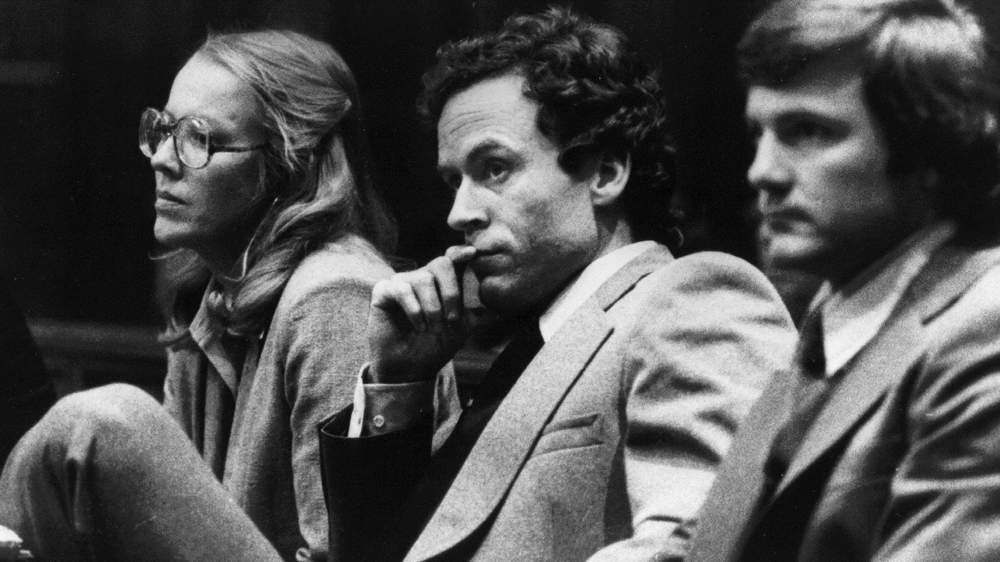

Ted Bundy
Early Life
Theordore Robert Cowell was born on November 24, 1946 to his mother Eleanor Louis Cowell and an unknown father in Burlington, Vermont. His family was deeply religious and his illegitimacy brought shame to them. Because of this shame they sought to hide the fact he had been born to his mother, instead saying that his grandparents were his parents and that he was his mother’s brother. There is conflicting information on when he truly found out that his alleged sister was his mother, some accounts pointing to when he was in college and others early years. Accounts of his homelife also range from him speaking warmly of his grandparents to talking about how abusive his grandfather was. Regardless of when he found out who the real identity of his mother or what the nature of his homelife was, he and his mother moved out to Tacoma Washington before he was five. Shortly after moving to Washington Louis married a hospital cook, Johnnie Bundy. Johnnie Bundy later formally adopted Ted and Ted took the last name of Bundy. As Ted grew, he did not like his stepfather Johnnie, complaining that he was poor and uneducated. Through all of his early years however, he exhibited strange tendencies and interests in the macabre and sharp objects such as knives. He recounted strolling through the neighborhoods at night, seeing if he could peer through others windows. It is also recorded that he had no qualms taking things from others. He stayed away from others, keeping mostly to himself, and this caused him to be an easy target for others to pick on in school.
Education
After graduating high school in 1965 he was accepted into the University of Puget Sound. After attending the University of Puget sound for a while he transferred to the University of Washington. In 1968 he dropped out of college and ended up working on a political campaign. He later reenrolled at the University of Washington in 1969 to study psychology. It was during this time that he started to date Elizabeth Kloepfer. It was also around this time that Ted Bundy began to work at a suicide hotline. In 1972 he graduated with a degree in psychology. After graduating with this degree, he decided to attend the Puget Law School and enrolled there in 1973. Shortly after starting his schooling however, he stopped attending classes. It was the beginning of 1974 that disappearances started to happen in the Seattle area and even down into Washington. Word that the girls who were disappearing had the company of a man named Ted began to spread. It was at this point that Ted decided that he would move and in the fall of 1974 he moved to Utah and began attending school at the University of Utah.
Catching Bundy
Disappearances and attacks continued to happen during this time and he did not attend his classes despite his enrollment. During this time cases such as the murder of a hitchhiker in Idaho and the murder of four teenage girls in Utah began to appear. He was eventually pulled over for running a stop sign and having a tail light out. When he was pulled over they found what is referred to as his, “murder kit”. He was arrested and taken into custody. When he was then pulled into a police lineup and was positively identified as the one who had attempted to kidnap and murder Carol DaRonch. This landed him in jail and there was mounting evidence against him. Hair samples from his car were able to be extracted and identified as victims of three other murders cases. Having been arrested he was transferred to Colorado on murder charges. He decided that he would be his own lawyer for the case. Because of this he was granted access to the Aspen Colorado Courthouse Library. While nobody was watching he was able to jump from the third story window of the courthouse and escape into the mountains. He was only able to maintain his freedom for six days before being taken back into custody by the police. However, six months later he was able to escape from his prison cell, creating a hole in the ceiling and losing weight to fit through the small gap he had opened. They were unaware that he had escaped for fifteen hours. During this time, he drove down to Tallahassee Florida and continued his crime spree. He attacked four girls in the Chi Omega sorority, killing two and severely injuring the others. He also broke into another woman’s apartment and badly beat her permanently damaging her hearing. On top of these heinous crimes, he also kidnapped Kimberly Leach who was only twelve years old and killed her. Finally, the police were able to detain him and the crime spree was over.
Trial and Conviction
Once again Bundy decided that he would be his own defense lawyer during the trial. Because of the number of crimes that he had garnered infamy and was a form of celebrity during his trial. The amount of evidence against his was great enough that despite all his efforts he was convicted of the murder of both the Chi Omega girls and the murder of Kimberly Leach, both of which landed him the death penalty. He was able to avoid this for a few years and even appealing to the court unsuccessfully. He was executed by electric chair in 1989 in Florida State Penitentiary. All in all he admitted to killing 36 women though he may have killed upwards of 100 people.
Sources
https://www.biography.com/crime-figure/ted-bundy
https://allthatsinteresting.com/ted-bundy
https://en.wikipedia.org/wiki/Ted_Bundy